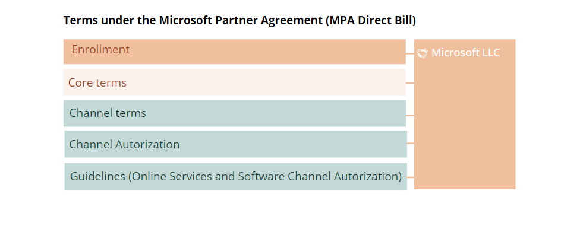
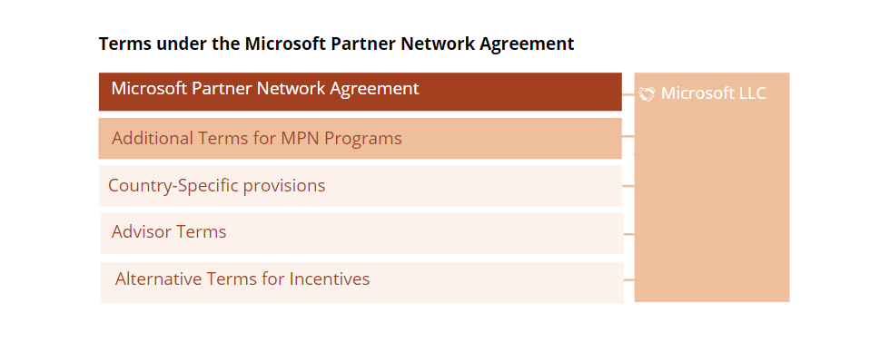

To obtain the right to resell Microsoft Online Services you must enter into the Microsoft Partner Agreement
(hereinafter referred to as MPA) with Microsoft. This is our review of the MPA for “Direct bill”, which is the
contract version applicable to resellers (Cloud Service Provider, “CSP”) who are authorized to order directly from
Microsoft and where the reseller establishes its own technical solutions for ordering and settling directly through
Microsoft's Partner Portal.
The review does not cover the version of the Microsoft Partner Agreement (referred to here as MPA, Indirect reseller)
that applies to resellers that acquire the right to sell through a distributor (ala Arrow, Crayon, etc.).
Note that if it
is desired for various reasons, you may be both CSP Direct Bill, and at the same time enter into an agreement
with a distributor, so that you may resell as an Indirect reseller.
The main difference between MPA "Direct Bill" and MPA "Indirect reseller" is mainly that the MPA "Direct Bill" has
several provisions related to ordering from Microsoft, payment regulations, etc. For the most part, the balance is
similar, except that a " Direct Bill" reseller may, upon termination of the agreement, continue to resell the Online
Services to active customers in accordance with the termination for convenience clause under the applicable
end customer's MCA or maximum for 12 months, while an " Indirect Reseller" must stop all resale the same day. In
addition the incentive models for a " Direct Bill" reseller are better than for an " Indirect Reseller".
The Microsoft Partner Agreement (MPA) consists of four documents ("Core Terms", "Channel Terms", "Channel
Authorization" and the "Guide to Online Services and Software Channel Authorization") that must be accepted. This is
done by signing an "Enrollment" with Microsoft, which corresponds to an order form, and is normally executed via the
Microsoft’s Partner Portal. This constitutes the "agreement":

In addition, is also required to enter into the Microsoft Partner Network Agreement (MPN) with Microsoft, which
allows you to become a member of the Microsoft Partner Network. This is thus a prerequisite for having a valid
Microsoft Partner Agreement. This separate agreement provides access to the Microsoft Partner Portal, where you can
find relevant information, offers (can participate in promotions, etc.), can make orders, etc. The Microsoft Partner
Network Agreement also has additional terms that apply if you wish to be an advisor to customers and potential
customers.
It consists of:

In addition to the Microsoft Partner Agreement and Microsoft Partner Network Agreement, Microsoft Partner Agreement
states that the Microsoft Customer Agreement is also applicable to you as a reseller, if you use or resell the MS
Online services “Azure Partner Shared Services” or “Microsoft Azure Stack Hub Offer Terms”. Therefore, you should
review which rights and obligations the Microsoft Customer Agreement imposes on you in such situations.
A detailed review of the Microsoft Partner Agreement, including Core Terms, Channel Terms, Channel and the Guide to
Channel Authorization follows under Detailed Walkthrough. Each of the sections provides a general description of
what each document regulates. In the review we have categorized all comments in three categories:
Obligations where you should establish procedures to ensure compliance
Note
Obligations that should be mirrored towards the end customers
Key findings in the Microsoft Partner Agreement
Relationship with the end customers
The reseller is obliged to ensure that customers accept Microsoft's terms and conditions and confirm this in the
Microsoft Partner Portal for each customer. The Microsoft Customer Agreement and associated terms (Product
Terms, SLA, DPA, etc.) must thus be flowed down to the reseller's own customers in the agreement entered into
between you as the reseller and the individual end customer, so it establishes a direct agreement between
Microsoft and the individual end customer. Since the end customers’ acceptance of the Microsoft terms and
conditions establishes a (separate) direct agreement between Microsoft and each individual end customer, both
Microsoft and each individual end customer may be able to enforce rights and obligations in relation to each
other directly. This means that the reseller will not be held liable by Microsoft for any breach of contract by
an individual end customer.
The reseller is obliged to ensure that all orders, both when establishing its end customer agreement and
subsequent additional orders, are made in writing and can be documented to Microsoft. This includes the duration
of the Services. This is referred to as the "Customer Purchase Commitment" in the MPA.
Although a direct agreement is entered into between Microsoft and each individual end customer, the reseller
remains responsible for payment for all consumption of the online services made by each individual customer,
regardless of whether the reseller receives payment from the individual end customer or not.
Microsoft may reject new customers for legal reasons or if there are reasonable grounds to believe that the
Customer will increase the risk for Microsoft. Microsoft may also suspend or terminate end customer
subscriptions in accordance with law, or regulations in the MPA or MCA (e.g. if the customer is in
breach).
Microsoft is not obligated to accept orders or accept desired quantity or future supplemental orders. Therefore,
you should notify Microsoft of potential orders, to ensure availability. This is especially important in case of
large volume orders.
The reseller must establish help desk/support for own customers to whom it resells, and must ensure that
customers do not contact Microsoft directly. When customers contact the reseller in connection with errors, the
reseller must set an initial categorization of the error.
Commercial aspects
In principle, the reseller may agree on the term of the services with the end customer, but for some services
Microsoft requests lock-in periods. And for some services, there is an automatic renewal after the end of the
subscription period. The reseller must check this for each service it resells.
If a lock-in period/minimum quantity is agreed for a end customer, this must be paid by the reseller even if the
reseller’s agreement ceases due to a material breach by the reseller itself or due to a material breach of the
MCA by the end customer, or if the end customer terminates the agreement with the reseller without cause before
the lock-in period is over.
In principle, the reseller determines the prices for each end customers unless MS gives discounts to public
customers, which in that case must be given to the customers in full (as opposed to Partner Earned Credits,
which the reseller retains entirely itself). Unless Microsoft provides discounts to individual customers, the
reseller shall pay for the consumed quantity at applicable prices in accordance with the "Price List." The list
price may be changed with 30 days' notice, or sooner for non-Microsoft products.
The reseller can earn bonuses, by earning discounts on upcoming invoices. Such Partner Earned Credit is not a
"discount" that must be shared with customers. The calculation of such earned discounts may be based on
activities and information provided by the reseller itself, or via indirect resellers you are licensed to resell
sell through (i.e. you have to become a distributor, so other CSPs may order online services for their own
customers through you), or end customers. It is important that the reseller shares the necessary information in
accordance with Microsoft's requirements. The "Partner Earned Credit" is normally 15%.
The fees payable is based on consumption measurements made by Microsoft itself.
As a general rule, Microsoft invoices every month, and the invoices are payable within 60 days. Note that there
is a 25 day’s period for notifying Microsoft if you disagree with the consumption measurements Microsoft itself
uses as the basis for the fees the reseller must pay to Microsoft each month. Also note that, even if you notify
within the deadline, you must still pay Microsoft the invoiced amount, otherwise you risk suspension or
termination for cause. Thus, it is not allowed to withhold any payment or set-off, etc. The agreement does not
impose any deadline on Microsoft as to how quickly they shall repay if they invoice too much.
Note also that Microsoft may have a "credit limit", so orders for online services exceeding this limit may be
declined, unless you obtain consent in each individual case.
Predictability / legal
The terms of the Channel Terms and Channel Authorization are subject to change by Microsoft with 180 days'
notice, while the Guide to Channel Authorization is subject to change with 30 days' notice. Therefore, you
should monitor changes that are introduced.
Microsoft may terminate the MPA for convenience/the right to resell with 30 days' written notice. You then loses
the right to resell and must transfer existing customers to another reseller or Microsoft. However, you may
still resell to active customers during the notice period, as long as the termination takes place within maximum
12 months. This should be mirrored towards end customers.
Microsoft may further change or remove products from Online Services with 30 days' notice. This also should be
mirrored towards end customers.
Microsoft may terminate the agreement due to a "breach", and it is not required that this breach is "material."
If the breach is not remedied within 30 days, Microsoft may terminate for cause, and you will then lose the
right to resell to new customers immediately and to existing customers within 12 months. Microsoft may also
claim damages for any loss.
Termination for cause may also take place immediately (without deadline/right to remedy the breach) in the event
of a breach of confidentiality, breach of Microsoft's IPR, or non-compliance with business conduct requirements
(compliance with laws and regulations concerning for example anti-corruption, training, etc.). Termination for
cause may also take place immediately without the right to remedy if previous breaches occur again. This
emphasizes the importance of keeping track of all obligations, which is the purpose of this review.
Microsoft may also stop access to the Microsoft Partner Portal and other systems and tools if the reseller is in
material breach. Unlike termination for cause, the threshold here is “material breach”. However, Microsoft will
notify in advance of such suspension only when it is "reasonable."
Note that the normal limitation of liability (capped at 100% and limited against indirect loss) does not apply
to unauthorized use of the other’s IPR, resale in violation of the provisions of the agreement, breach of
compliance obligations or breach of confidentiality duty. This means that the reseller's liability for the most
practical purposes is unlimited, which underlines the need to comply with the obligations of the agreement.
The contracting party is mainly Microsoft Ireland, and Irish law is the choice of law.
Routines that should be established
The MPA contains several compliance obligations. Since non-compliance can result in both suspension and/or
termination for cause, as well as unlimited liability for damages, it is important to familiarize yourself with and
comply with these obligations. For instance:
Microsoft's Trademark and Brand Guidelines for use of Microsoft trademarks
Detailed business integrity requirements such as compliance with export control rules, legislation related to
environmental protection, IPR, HSE, anti-corruption legislation, anti-money laundering rules, internal control
rules (e.g. under GDPR), bookkeeping obligations, etc.
Requirements for completion of Microsoft training in anti-corruption
Compliance with Microsoft's own code of conduct
Requirements for reporting. There is a risk that orders may be suspended or that payment may be withheld in case
of noncompliance with these requirements.
Requirements for complete documentation of the reseller's fulfilment of its obligations under the MPA, including
information about customers, orders, quantities, etc.
Privacy and Data protection
Each party acts as data controller with respect to any personal data exchanged between the reseller and
Microsoft under the Microsoft Partner Agreement. The nature, purpose and category of personal data must be
stated in the specific form filled out when the reseller register as a reseller. The reseller must ensure that
it has a legal basis to be the controller of that personal data and to disclose any such personal data to
Microsoft.
Customer data shall be defined in the individual customer agreement. Prior to receiving customer data, which is
also personal data, the reseller shall ensure that both the reseller and Microsoft have a legal basis for
processing such personal data. The reseller and Microsoft will be independent processors for processing of such
personal data. This means that Microsoft will not be a subcontracted processor of the reseller, but the reseller
is responsible for establishing a basis for Microsoft being a data processor. Therefore, the reseller must
ensure that the customer agreement is concluded, so that a data processing agreement is established between the
customer and Microsoft. If the reseller also processes this personal data, a data processing agreement between
the reseller and the customer must also be established.
Key findings in the Microsoft Partner Network Agreement
The right to resell Microsoft Online services presupposes a valid Microsoft Partner Network Agreement. Microsoft
may terminate the Microsoft Partner Agreement for cause in the event of breach of the Network Agreement.
The Network agreement may be terminated by Microsoft without cause with 30 days' notice. If the Network
agreement is terminated, the Microsoft Partner Agreement will also terminate automatically.
Termination for cause may take place immediately in the event of non-compliance with/breach of duties such as
Privacy and Data protection, Confidentiality, Business Integrity Principles, breach of the other's IPR, or other
breach that cannot be remedied within a reasonable time. There is no requirement that the breach of contract
must be material or that you are given the opportunity to remedy such breach. Since the Microsoft Partner
Network Agreement is a prerequisite for the Microsoft Partner Agreement, this entails an increased risk that the
Microsoft Partner Agreement may terminate, compared to what follows from the Microsoft Partner Agreement alone.
Again, this underlines the importance of having under control all obligations in the agreement and creating
procedures for complying with these obligations.
Microsoft may modify the Microsoft Partner Network Agreement, Microsoft materials (content, information, sales
tools, documentation, marketing materials such as logos, etc.) or a program (offers, incentives, promotions,
etc.) etc. with 30 days' written notice.
As the above key findings demonstrate, the reseller in this contractual relationship has relatively little
predictability in the T&C’s while having extensive obligations. In the following you will find our detailed
review of each individual agreement document, as well as our suggestions as to how to manage the risks. The risks
may be managed either by establishing internal procedures to ensure compliance with the obligations or by mirroring
risks or obligations in the agreements with its own end customers.
NOTE – the purpose of this document is to provide an overview of the rights and obligations in these agreements
and thus help you to understand them as a whole. It is not easy to make a summary that would address all the
details of the terms and conditions in a way that would cover all resellers’ needs, so you should also read
through the terms and conditions in their entirety if you want to maintain full control.